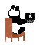
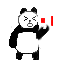
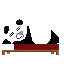

Free & open source · macOS
nudge is a tiny pixel pet that lives in the corner of your screen. It tracks how you spend your time, loses energy as you grind, and nudges you to take real breaks — before you burn out.
Built with Tauri + React · ~10 MB app, near-zero idle CPU
energy
Real in-app sprites — this is exactly how nudge animates on your desktop.
why nudge
nudge stays out of your way while you work and shows up exactly when you need a push to rest.
Every sprite is predecoded at launch, so state changes — focused, resting, nudging — swap instantly with zero flicker. Your pet reacts to the app you're actually using.
Built on Tauri with a native Rust core — a ~10 MB app that idles at near-zero CPU and a sliver of RAM. It's a pet, not a Chrome tab.
Set your own work/break rhythm, queue custom reminder notes, and let auto-breaks kick in when you step away or your Mac sleeps. Energy recharges only when you actually rest.
how it works

nudge settles into a corner of your screen and quietly tracks what you're focused on — no accounts, all data stays local.

As you grind, its energy drains. On your schedule, it pipes up with a reminder — or one of your own queued notes.

Take the break — your pet naps and recharges with you. Check daily and weekly reports to see where your time really went.
Free, open source, and kind to your battery. Adopt your nudge in under a minute.